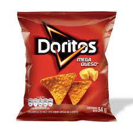
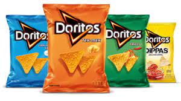

Doritos
En esta pagina les vamos a mostrar un poco sobre los Doritos

Doritos es una marca de tortilla chip con sabor producidos desde 1964 por la empresa de alimentos estadounidense Frito-Lay. El aperitivo es el tradicional totopo mexicano condimentado, está hecho de tortilla de maíz frita, su forma triangular proviene de la original derivada de rebanar las tortillas.
Cubre el 14% del total de una ingesta promedio de 2,000 calorías, sin embargo son “calorías vacías”, pues no aportan ningún nutrimento, ya que provienen de la grasa, harinas refinadas y maíz agroindustrial. Carece de nutrientes importantes para una dieta saludable.
¿Por qué se llamaron así? West fue quien bautizó así el producto. La palabra 'Doritos' es la mezcla entre dorado y fritos. West estuvo tan ligado a esta creación que, en su funeral, su hija lanzó Doritos sobre su tumba, como él había pedido.
